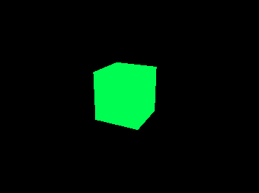

Here's the base template from the official three.js docs, but with comments to explain each line of code.
</script>
<script>
// make scene
var scene = new THREE.Scene();
// make camera in scene
var camera = new THREE.PerspectiveCamera(
75, window.innerWidth/window.innerHeight, 0.1, 1000 );
// render settings
var renderer = new THREE.WebGLRenderer();
renderer.setSize( window.innerWidth, window.innerHeight );
// put the canvas in the body
document.body.appendChild( renderer.domElement );
// camera position
camera.position.z = 5;
// create box geometry
var geometry = new THREE.BoxGeometry( 1, 1, 1 );
// create box material
var material = new THREE.MeshBasicMaterial( { color: 0x00ff00 } );
// create box object
var cube = new THREE.Mesh( geometry, material );
// put box object in scene
scene.add( cube );
// render loop
var animate = function () {
requestAnimationFrame( animate );
cube.rotation.x += 0.01;
cube.rotation.y += 0.01;
renderer.render( scene, camera );
};
// start rendering
animate();
</script>
</body>
</html>
Be sure to have the three.js file in the js folder.
When rendered by a browser, the javascript makes a canvas tag inside the body tag (line 22). That canvas is an image that is rendered as fast as it can. 60 frames per second by default on most machines and phones. The resulting canvas should show a rotating green box like this.
This is a basic example, but it shows how easy it is to get started. All the information is in the official docs and examples.
You can edit and play with this code here.